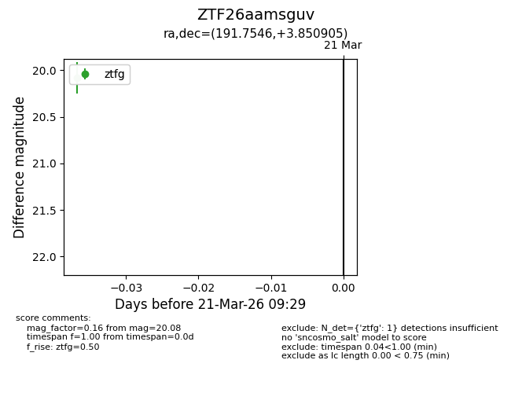
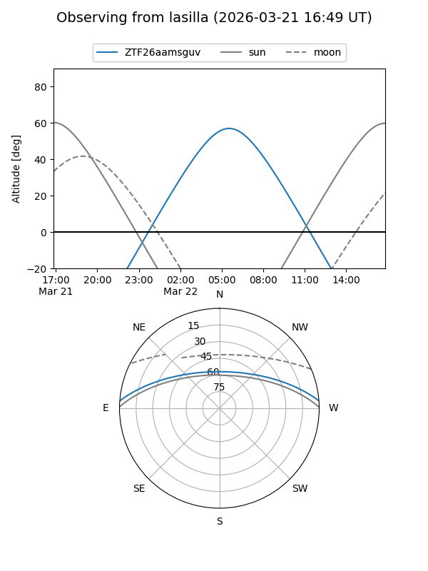
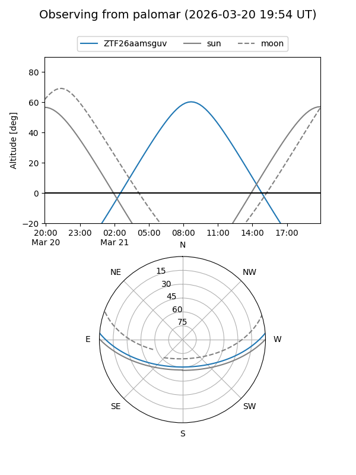

ZTF26aamsguv
Target ZTF26aamsguv at 2026-03-21 09:31
Aliases and brokers:
FINK: link
Lasair: link
ALeRCE: link
alt names
ZTF26aamsguv (ztf,fink_ztf)
Coordinates:
equatorial (ra, dec) = 191.7546,+3.85090
equatorial (HMS+DMS) = 12:47:01.11,+03:51:03.26
galactic (l, b) = (300.1442,+66.69873)
Flags:
Photometry:
last ztfg=20.08
1 ztfg detections
Lightcurve

Visibility


Additional plots